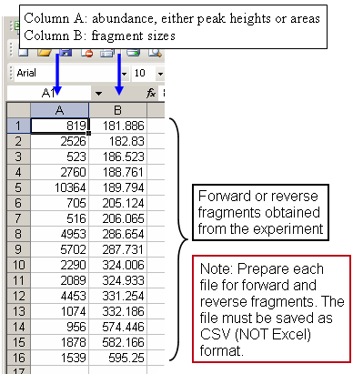

CSV Formatted Sampe Files
The MiCA T-RFLP Analysis (APLAUS+) uitilizes the CSV (Comma Separated Values)
format. The CSV file format is often used to exchange data between disparate
applications. The file format, as it is used in Microsoft Excel, has become
a widely accepted standard in the industry. A CSV file is a specially formatted
plain text file, which stores spreadsheet or basic database-style information
in a very simple format, with one record on each line, and each field within
that record separated by a comma. CSV files are often used as a simple way to
transfer a large volume of spreadsheet or database information between programs,
without concerning about special file types. The following figure show how to
create a CSV formatted sample file for APLAUS+.

Creating a CSV file from spreadsheet data is very simple in Microsoft Excel.
1. Open your spreadsheet document and go to the File menu,
then select Save As ...
2. Change the Save as type or Format field to read: CSV (Comma Delimited)
3. Enter a name for the document and click Save
You can download example files for forward and reverse fragments.